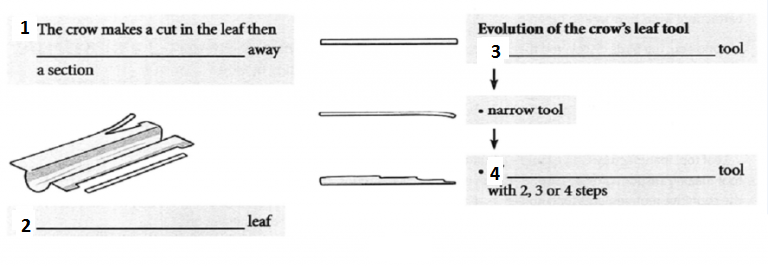

A remarkable colony of inventors has emerged on an isolated Pacific island.They can fashion tools out of materials scavenged from the rainforest. They can even customise a tool for a given job. Meet the crows of New Caledonia.
Thinkers as diverse as Freud, Engels and Thomas Carlyle once pointed to the use of tools as being a defining behaviour of human beings. Then it was found that many animals also used them, from the’fishing sticks’of apes to the rocks dropped on ostrich eggs by Egyptian vultures. Crows are particularly crafty. Earlier studies showed that they are almost human-like in their use of tools, with technological features that match the stone and bone tool cultures that emerged among primitive humans between 2.5 million and 70,000 BC.
But only humans were thought to have the brain power required for cumulative technological evolution. This is the skill for innovation that took our ancestors two million years ago from creating flakes of flint, for use in cutting, to honing knives, blades, arrowheads and axeheads.
Now this ‘unique’ attribute of humans has also turned out to be a flattering delusion. A new study shows that the crows of New Caledonia are inventive. With their evolving leaf tools, the birds have levered man off his pedestal.
Dr Gavin Hunt and Dr Russell Gray of the University of Auckland have spent the past decade studying feathered technology in New Caledonia, 900 miles north-east of Australia. After an intensive field survey of local crow industry, the scientists found that the birds rip the leaves of the pandanus tree to fashion three distinct types of tool for grub and insect extraction: wide, narrow and tapered.
Long ago, the birds discovered that they could rip the serrated edge off the leaves to make a wide tool. The skill spread and the crows honed tools with finer working tips, by either narrowing tools or tapering them. (Because the leaves are reinforced by tough parallel fibres, the tapered design is made in steps. The crow nips the leaf, rips along the fibres, makes another cut and tears again, repeating until it has a tool with usually two, three or four steps.)
Leaf tool manufacture is an example of culture: the birds leam through example and their tool-making wisdom grows in sophistication down the generations. The crows appear to have the cognitive requirements for cumulative, though rudimentary, technological evolution, said Dr Gray. Tool manufacture in New Caledonian crows shows striking flexibility and innovation.’ The ability of the birds to innovate is further shown by their making of other tools. They often strip a twig of leaves and cut it off just below a shortened offshoot to create a hook to get bugs out. They also use simpler tools to extract grubs from the dead wood of trees.
Prof Alex Kacelnik, fellow of Pembroke College, Oxford, praised the study as’extremely important’. It complements his own research, with Dr Jackie Chappell and Alex Weir, which has turned Betty the New Caledonian crow into a star by revealing her to be the first animal, other than man, to show a basic understanding of cause and effect.
Betty began making tools after her partner snatched away a hook made for her by the researchers, forcing her to make her own from garden wire to fish out morsels from a tube. She wedged the end of the wire into the base of the food tube and turned her head to form the hook. What amazed the researchers is that she can even adapt her hooks if they are not up to the job, something that even chimpanzees are unable to do. Although chimps use sticks in experiments, they have not shown any human-like understanding of basic physical laws.’When she starts bending the wire it is as if she has a clear objective, even correcting the angle of the hook if it is not right,’ said Prof Kacelnik.’Although many animals use tools, purposeful modification of objects to solve new problems, without training or prior experience, is virtually unknown.’
‘While we have been emphasising the individual ability of animals like Betty to solve problems, the New Zealand team has been emphasising tool manufacture, the cultural traditions and transmission of information in the wild,’ said Prof Kacelnik. Both strands of research are related by how the crows are not genetically programmed to use a tool, like a spider and his web. Instead, the birds creatively invent new kinds of tools to solve problems and can share skills with others.
The crow family are the Einsteins of the avian world, though Prof Kacelnik added that, at least in terms of tool making, the Pacific crows are smarter than their British cousins. We have not yet identified what it is that makes these crows so special, though it is something to do with ecological circumstances,’said Prof Kacelnik.
Once scientists have got to the bottom of what makes Pacific crows master toolmakers, they may have to think again about how this skill evolved in humans.
Complete the diagrams.
Choose NO MORE THAN TWO WORDS from the passage for each answer.

1
2
3
4
Classify the following statements as referring to the crow(s) in
A the study by Hunt and Gray
B the study by Kacelnik, Chappell and Weir
C both studies
Write the correct letter, A, B or C.
5 can share tool-making skills with other crows
6 can make special tools for a particular purpose
7 can solve problems by understanding rather than learning
8 can make tools better than British crows can
9 can manufacture hooks to extract food
Complete the summary.
Choose NO MORE THAN TWO WORDS from the passage for each answer.
| It used to be thought that only human beings used tools. Even after we learned that many other 10 also do so, it was still believed that only humans were intelligent enough to gradually evolve better tools. A study of crows in 11 , however, shows that these birds use a leaf tool which has been evolved over several generations. A crow in another study has shown the humanlike ability to understand 12 in order to manufacture tools, which not even 13 can do. |
Please Submit to view your score, solution and explanations.